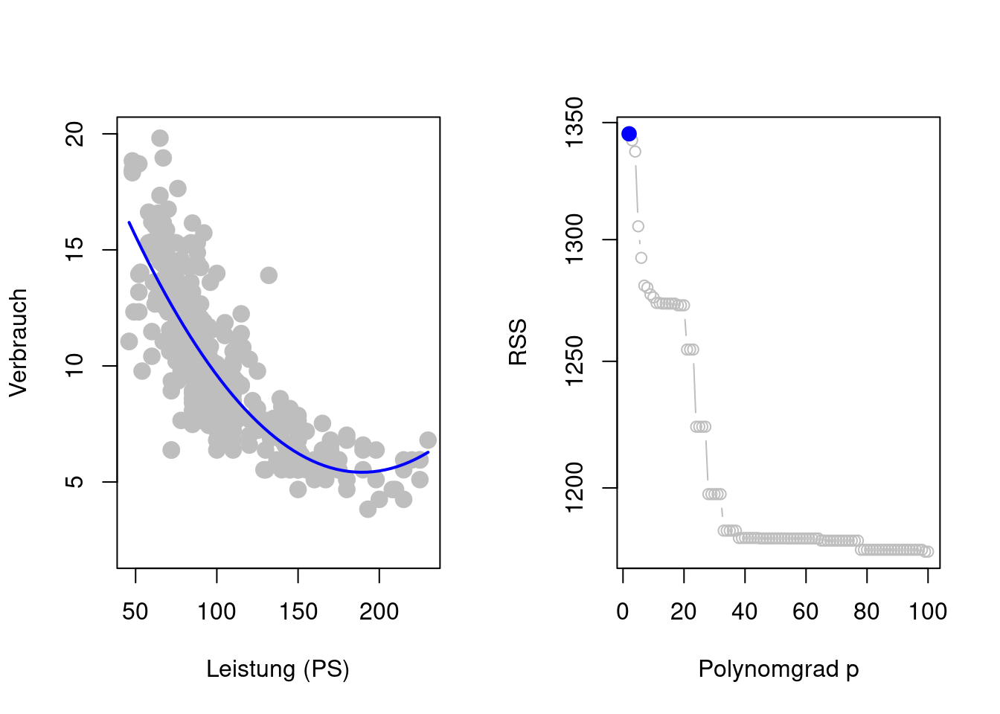

1.2 Das multivariate lineare Regressionsmodell
Um die allgemeine Regressionsfunktion \(f(X)=E(Y|X)\) mit Hilfe der Daten zu schätzen (lernen), gibt es sehr viele verschiedenen Möglichkeiten. Eine der erfolgreichsten und am häufigsten verwendete Möglichkeit ist das multivariaten linear Regressionsmodell. Dieses Modell ist die strukturelle Modellannahme, dass sich die unbekannte Regressionsfunktion \(f\) als lineare Funktion (linear in den Modellparametern \(\beta_0, \beta_1, \dots, \beta_p\)) schreiben lässt: \[ f(X)=\beta_0+\beta_1X_1+\dots+\beta_pX_p. \]
Unter dieser Modellannahme wird das allgemeine Regressionsmodell \(Y=f(X)+\varepsilon\) zum multivariaten (multiplen) linearen Regressionsmodell \[\begin{align*} Y=\beta_0+\beta_1X_1+\dots+\beta_pX_p+\varepsilon. \end{align*}\] Zusammen mit der Annahme, dass \(\varepsilon\) unabhängig von \(X\) ist, und dass \(E(\varepsilon)=0\), können wir mit dieser Modellannahme den unbekannten bedingten Mittelwert \(E(Y|X)=f(X)\) vereinfacht schreiben als \[\begin{align*} E(Y|X)=\beta_0+\beta_1X_1+\dots+\beta_pX_p. \end{align*}\]
Vorteile des multivariaten linearen Regressionsmodells:
- Anstatt eine gänzlich unbekannte Funktion \(f\) schätzen (lernen) zu müssen, muss man lediglich die unbekannten Parameterwerte \(\beta_0, \beta_1, \dots, \beta_p\) schätzen.
- Die Modellstruktur ist keine Black Box, sondern gibt Aufschluss darüber den assoziativen Zusammenhang zwischen den Prädiktorvariablen und der Zielvariablen.
- Die lineare Modellstruktur ist extrem flexibel, da Transformationen der Prädiktorvariablen grundsätzlich erlaubt sind.
Gerade die große Flexibilität linearer Modelle werden wir nutzten müssen, um die nicht linearen Zusammenhänge zwischen den Prädiktorvariablen und der Zielvariablen in unserem Benzinverbrauchsbeispiel berücksichtigen zu können (siehe Abbildung 1.2).
1.2.1 Schätzung
Wir wollen nun diejenige Funktion \[ \hat{f}(X)=\hat{\beta}_0 + \hat{\beta}_1 X_1 + \dots + \hat{\beta}_p X_p \] finden, sodass \(Y\approx \hat{f}(X)\) für alle Datenpunkte \((Y,X)\).
Zur Berechnung von \(\hat{f}\) können wir die beobachteten Daten als Trainingsdaten verwenden:
\[
\left\{(x_1,y_1),(x_2,y_2),\dots,(x_n,y_n)\right\}\quad\text{wobei}\quad x_i=(x_{i1},x_{i2},\dots,x_{ip})^T.
\]
Im Folgenden werden wir oft die Notation
\[x_{ij},\quad i=1,\dots,n,\quad j=1,\dots,p\]
verwenden, um die \(j\)te Prädiktorvariable der \(i\)ten Beobachtung zu bezeichnen. Der Laufindex \(j=1,\dots,p\) repräsentiert die einzelnen Prädiktorvariablen (z.B. Verbrauch, Gewicht, Pferdestärken, und Hubraum im Auto_df Datensatz) und der Laufindex \(i=1,\dots,n\) repräsentiert die einzelnen Beobachtungen (z.B. gespeichert als Zeilen im Auto_df Datensatz).
Idee: Die Trainingsdaten \(\left\{(x_1,y_1),(x_2,y_2),\dots,(x_n,y_n)\right\}\) enthalten Information zum unbekannten Regressionsmodell \(f\), da (so die Grundidee) die Daten von eben diesem Modell erzeugt wurden. Ziel ist also die unbekannte Regressionsfunktion \(f\) mit Hilfe der Trainingsdaten zu schätzen (erlernen).
Für jede mögliche Schätzung \(\hat{f}\) von \(f\) können wir die beobachteten Werte der Zielvariablen \(y_1,\dots,y_n\) mit den vorhergesagten Werten \[ \hat{y}_i=\hat{f}(x_i)=\hat{\beta}_0 + \hat{\beta}_1 x_{i1} + \hat{\beta}_2 x_{i2} + \dots + \hat{\beta}_p x_{ip} \] vergleichen, indem wir die Residuen \[ e_i = y_i-\hat{y}_i\quad i=1,\dots,n \] betrachten.
Die gängigste Methode zur Schätzung der unbekannten Modellparameter \(\beta_0,\beta_1,\dots,\beta_p\) ist die Methode der kleinsten Quadrate. Wir definieren die Residuenquadratsumme RSS (Residual Sum of Squares) als:
\[
\operatorname{RSS}=e_1^2+e_2^2+\dots +e_n^2
\]
oder äquivalent als
\[
\operatorname{RSS}=
(y_1-\hat{\beta}_0 + \hat{\beta}_1 x_{11} + \dots + \hat{\beta}_p x_{1p})^2 +
\dots +
(y_n-\hat{\beta}_0 + \hat{\beta}_1 x_{n1} + \dots + \hat{\beta}_p x_{np})^2
\]
Die Methode der kleinsten Quadrate bestimmt die Parameterschätzungen \(\hat{\beta}=(\hat{\beta}_0,\hat{\beta}_1,\dots,\hat{\beta}_p)^T\) durch Minimierung der Residuenquadratsumme RSS. Nach ein paar Rechnungen kann man zeigen, dass
\[\begin{align*}
\left(
\begin{matrix}
\hat{\beta}_0\\
\hat{\beta}_1\\
\vdots\\
\hat{\beta}_p
\end{matrix}
\right)=
\left(
\left(\begin{matrix}
1&x_{11}&\dots & x_{1p}\\
\vdots&&\ddots & \vdots\\
1&x_{n1}&\dots & x_{np}\\
\end{matrix}\right)^T
\left(\begin{matrix}
1&x_{11}&\dots & x_{1p}\\
\vdots&&\ddots & \vdots\\
1&x_{n1}&\dots & x_{np}\\
\end{matrix}\right)
\right)^{-1}
\left(\begin{matrix}
1&x_{11}&\dots & x_{1p}\\
\vdots&&\ddots & \vdots\\
1&x_{n1}&\dots & x_{np}\\
\end{matrix}\right)^T
\left(
\begin{matrix}
Y_1\\
\vdots\\
Y_n
\end{matrix}
\right)
\end{align*}\]
1.2.2 Polynomregression
Die Polynomregression ist eine Möglichkeit, die nicht linearen Beziehungen zwischen der Zielvariablen und den Prädiktorvariablen in unserem Benzinverbrauchsproblem (siehe Abbildung 1.2) berücksichtigen zu können. So kann, zum Beispiel, der nicht lineare Zusammenhang zwischen Verbrauch und Leistung PS sehr flexibel als Polynomfunktion modelliert werden:
\[
\texttt{Verbrauch}=\beta_0 + \beta_1 \texttt{Ps} + \beta_2 \texttt{PS}^2 + \dots + \beta_p \texttt{PS}^p
\]
Je höher der Grad \(p\) des Polynoms, desto flexibler ist ein Polynomregressionsmodell und ermöglicht so auch die Modellierung nicht linearen Zusammenhänge. Das Polynomregressionsmodell ist jedoch für alle Polynomgrade \(p\) ein (multivariates) lineares Regressionsmodell, denn es ist linear bezüglich der Modellparameter \(\beta_0, \beta_1, \dots, \beta_p\).
## Polynom Regressionen
polreg_1 <- lm(Verbrauch ~ poly(PS, degree = 1, raw=TRUE), data = Auto_df)
polreg_2 <- lm(Verbrauch ~ poly(PS, degree = 2, raw=TRUE), data = Auto_df)
polreg_5 <- lm(Verbrauch ~ poly(PS, degree = 5, raw=TRUE), data = Auto_df)
## Data-Frame zum Abspeichern der Prädiktionen
plot_df <- tibble("PS" = seq(45, 250, len=50))
## Abspeichern der Prädiktionen
plot_df$fit_1 <- predict(polreg_1, newdata = plot_df)
plot_df$fit_2 <- predict(polreg_2, newdata = plot_df)
plot_df$fit_5 <- predict(polreg_5, newdata = plot_df)
## Ploten
plot(Verbrauch ~ PS, data = Auto_df, ylim=c(2,20),
xlab="Leistung (PS)", pch=21, col="gray", bg="gray", cex=1.5)
with(plot_df, lines(x = PS, y = fit_1, lwd=2, col="orange"))
with(plot_df, lines(x = PS, y = fit_2, lwd=2, col="blue"))
with(plot_df, lines(x = PS, y = fit_5, lwd=2, col="darkgreen"))
legend("topright", lty=c(NA,1,1,1), pch=c(21,NA,NA,NA),
col=c("gray","orange","blue","darkgreen"), pt.bg="gray", pt.cex=1.5,
legend=c("Datenpunkte", "Grad 1", "Grad 2", "Grad 5"), bty="n")
Abbildung 1.5: Polynom Regression bei verschiedenen Polynomgraden \(p\).
Überanpassung
Zusätzlich zur Wahl der Modellparameter \(\hat{\beta}_0, \hat{\beta}_1, \dots, \hat{\beta}_p\) besteht hier nun das Problem der Wahl des Grades \(p\) des Polynoms als weiteren Modellparameter \[ y_i=\hat{\beta}_0 + \hat{\beta}_1 x_{i1} + \hat{\beta}_2 x_{i2}^2 + \dots + \hat{\beta}_p x_{ip}^p + e_i \] Wenn man jedoch versucht, alle Modellparameter (also \(\hat{\beta}_0, \hat{\beta}_1, \dots, \hat{\beta}_p\) und \(p\)) durch Minimieren der Trainingsdaten-RSS \[ \operatorname{RSS}\equiv\operatorname{RSS}(\hat{\beta}_0, \hat{\beta}_1, \dots, \hat{\beta}_p,p)=e_1^2 + e_2^2 + \dots + e_n^2 \] zu schätzen, so ergibt sich ein Problem das als Überanpassung (Overfitting) bekannt ist (siehe Abbildung 1.6). Das Polynomregressionsmodell ist so flexibel, dass es den einzelnen Trainingsdaten \((x_i,y_i)\) folgen kann. Eine Überangepassung an die Trainingsdaten führt jedoch notwendigerweise zu einer Verschlechterung der Vorhersagegüte bezüglich neuer Daten.


Abbildung 1.6: Polynom Regression und die Wahl des Polynomgrades \(p\) durch Minimierung der Trainingsdaten-RSS. (Eine schlechte Idee).